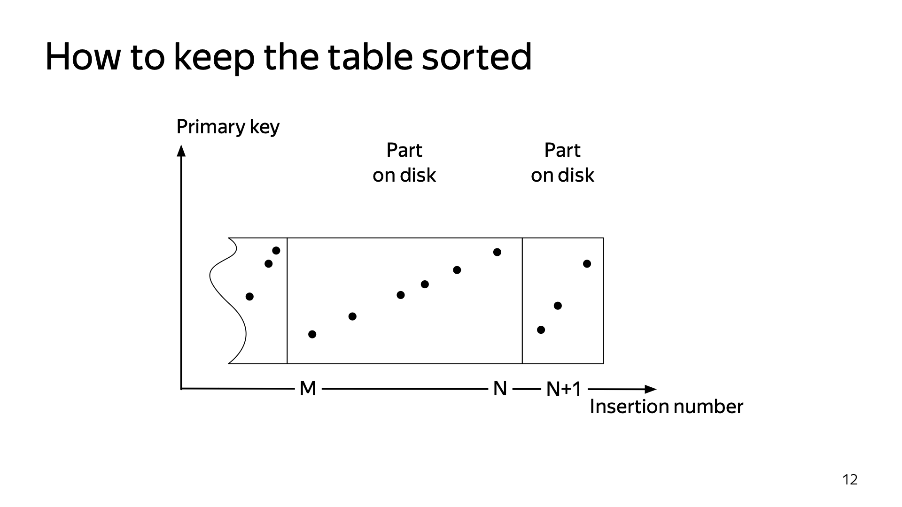
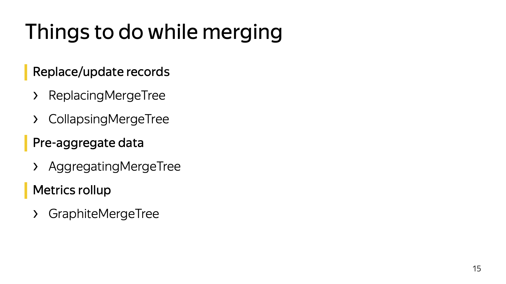

Data locality on disk (artistic view)
The main concern is data locality.

a.k.a. How To Write Efficient Code
— Data & Computation in the same place (Clickhouse, Spark...)
— Data & Computation are in different places (MySQL + Whatever)
Open-source distributed analytical DBMS.
https://github.com/ClickHouse/ClickHouse/
Used in: CARTO, Mercadona, Zara, Idealista, Corunet, ... Cloudflare, Spotify, Amadeus, Bloomberg, Cisco, Deutsche Bank, Tencent, ByteDance...
"top-down"
or "bottom-up" design?
Top-Down:
— choose a high-level architecture;
— choose what classes will be in the codebase;
— draw some diagrams;
Bottom-Up:
— how the inner loop in my code will work?
— what is the data layout in memory?
— what bytes are read/written and where?
ClickHouse was developed from a prototype,
implemented in year 2008
that was intended to solve just a single task:
— to filter and aggregate data as fast as possible.
— in other words, just to do GROUP BY.
http://highscalability.com/blog/2017/9/18/evolution-of-data-structures-in-yandexmetrica.html
1. What are the basic numbers (throughput, latency, volume...)
of our hardware (CPU, RAM, SSD, HDD, network...)
on what operations?
2. What are the data structures we use?
and how the work with our hardware?
3. and do some basic math...
Example:
— we will do GROUP BY in memory;
— will put all data in a hash table;
— if the hash table is large, it will not fit in L3 cache of CPU;
— if the values of GROUP BY keys are not distributed locally,
then we have L3 cache miss for every row in a table;
— L3 cache miss has 70..100 ns latency;
How many keys per second we can process?
Example:
SELECT rand() % 10000000 AS k
FROM system.numbers_mt
GROUP BY k
175.52 million rows/s.
Big data processing is not a problem.
The challenge is how to store data in that way to allow both:
- efficient ingestion of click stream in realtime;
- efficient generation of reports;
Let review our historical solutions first...
We have had about 50 predefined report types.
We create a table for each of them.
Each table has primary key in form of:
site_id, date, key -> aggregated statistics.
The data was inserted in mini-batches of aggregated deltas,
using ON DUPLICATE KEY UPDATE.
... but this just don't work.
The main concern is data locality.
We use HDD (rotational drives).
We cannot afford petabytes of SSDs.
Each seek is ~12 ms of latency,
usually no more than 1000 random reads/second in RAID array.
Time to read data from disk array is dependent on:
- number of seeks;
- total amount of data;
Example: read 100 000 rows, randomly scattered on disk:
- at least 100 seconds in worst case.
User won't wait hundred seconds for the report.
The only way to read data from disk array in appropriate amount of time is to minimize number of seek by maintaining data locality.
Fundamental problem:
Data is inserted almost in time order:
- each second we have new portion data for this second;
- but data for different web sites are comes in random order in a stream;
Data is selected by ranges for specified web site and date period:
- in ranges of completely different order;
MyISAM stores data in MYD and MYI files.
MYD contains data almost in order of insertion.
MYI contains B-tree index that maps a key to offset in MYD file.
Insertion of data is almost fine.
But selecting of data by range of primary key was non-practical.
Nevertheless, we made it work by:
- tricky partitioning;
- organizing data in few generations with different partitioning scheme;
- moving data between tables by scheduled scripts;
- report generation becomes ugly UNION ALL queries.
Users are not satisfied with 50 predefined reports.
Everyone wants deep ad-hoc analytics with custom reports
— to slice and dice data by any dimension.
This is only possible with non-aggregated data.
We had quickly made a prototype of so-called "report builder".
This was 2010 year. It was just simple specialized column-oriented data structure.
It worked fine and we got understanding, what the right direction to go.
We need good column-oriented DBMS.
This is how "traditional" row-oriented databases work:

And this is how column-oriented databases work:

Hypothesis:
If we have good enough column-oriented DBMS,
we could store all our data in non-aggregated form
(raw pageviews and sessions) and generate all the reports on the fly,
to allow infinite customization.
To check this hypothesis, we started to evaluate existing solutions.
MonetDB, InfiniDB, Vertica, Infobright and so on...
No appropriate solutions were exist in 2010.
As an experimental project, we started to develop
our own column-oriented DBMS: ClickHouse.
In 2012 it was in production state.
In 2014 we re-lauched Yandex.Metrica as Metrica 2.
All data is stored in ClickHouse and in non-aggregated form
and every report is generated on the fly.
In Metrika 2 the user could create it's own report with
- custom dimensions, metrics, filters, user-centric segmentation...
- and to dig through data to the detail of individual visitors.
The main target for ClickHouse is query execution speed.
In Yandex.Metrika, users could analyze data for their web sites of any volume.
Biggest classifieds and e-commerce sites with hundreds millions PV/day are using Yandex.Metrika (e.g. ru.aliexpress.com).
In contrast to GA*, in Yandex.Metrika, you could get data reports for large web sites without sampling.
As data is processed on the fly, ClickHouse must be able to crunch all that pageviews in sub second time.
* in Google Analytics you could get reports without sampling only in "premium" version.
* If you want to try ClickHouse, one server or VM is enough.
For well structured, clean, immutable events.
Click stream. Web analytics. Adv. networks. RTB. E-commerce.
Analytics for online games. Sensor and monitoring data. Telecom data.
Structured logs.
OLTP
ClickHouse doesn't have UPDATE statement and full-featured transactions.
Key-Value
If you want high load of small single-row queries, please use another system.
Blob-store, document oriented
ClickHouse is intended for vast amount of fine-grained data.
Over-normalized data
Better to make up single wide fact table with pre-joined dimensions.
We think ClickHouse is too good to be used solely by Yandex.
We made it open-source. License: Apache 2.0.
https://github.com/ClickHouse/ClickHouse/
L3 cache miss has throughput of 40 million ops/sec. on a single CPU core
and ~ 500 million. ops/sec*. on 32 hyper-threading CPU cores
(Xeon E5-2650v2).
Never mess up latency and throughput!
* but we have just 175 million rows per second. Is ClickHouse slow?
If you need maximum performance
— then interfaces in the code are determined by algorithms!
You can choose different algorithms for each table of your database
— we just cannot make it slower.
Yandex.Metrica must work.
Algorithmic optimizations.
MergeTree, locality of data on disk
— fast range queries.
Example: uniqCombined function is a combination of three different data structures, used for different ranges of cardinalities.
Low-level optimizations.
Example: vectorized query execution.
Specialization and attention to detail.
Example: we have 17 different algorithms for GROUP BY. Best one is selected for your query.
https://www.percona.com/blog/2017/02/13/clickhouse-new-opensource-columnar-database/

- fine if all indices fit in RAM;
- high disk usage for data and indices;
- almost not possible to use after some data volume threshold;
- slow scans.
- Spark is fine as a platform for data transformations;
- not possible to ingest data in realtime while maintaining fast range scans - need to apply tricky partitioning and manual merging;
- scans are relatively fast, though slower than ClickHouse;
- good for semistructured data;
- slow scans, no complex analytical queries;
- Interactive queries on data updated in real time;
- Cleaned structured data is needed;
- Try hard not to pre-aggregate anything;
- Query language: a dialect of SQL + extensions
Read Data Fast
- Use only the columns you need
- Locality of reads (an index is needed!)
- Data compression (LZ4 + sampling to determine the best settings... multi-armed bandits algorithm)
Process Data Fast
- Vecotorized execution (block-based processing)
Parallelize to all available cores and machines
Specialization and low-level optimizations
The principle is the same as with classic DBMSes
Differences
- The table will be physically sorted on disk
- Is not a unique constraint


Example: substring search:
— in C: strstr, memmem;
— in C++: std::search, std::string::find.
But these functions are slow! (in some usage scenario).
Substring Search:
void * memmem(const void * haystack, size_t haystacklen,
const void * needle, size_t needlelen);
— there is no separate initialization routine;
— required to be reentrable — cannot allocate memory.
But what if we search a single needle in 1 000 000 different haystacks?
Searcher searcher(needle);
for (const auto & haystack : haystacks)
searcher.search(haystack);
Brute Force algorithm Deterministic Finite Automaton algorithm Karp-Rabin algorithm Shift Or algorithm Morris-Pratt algorithm Knuth-Morris-Pratt algorithm Simon algorithm Colussi algorithm Galil-Giancarlo algorithm Apostolico-Crochemore algorithm Not So Naive algorithm Boyer-Moore algorithm Turbo BM algorithm Apostolico-Giancarlo algorithm Reverse Colussi algorithm Horspool algorithm Quick Search algorithm Tuned Boyer-Moore algorithm Zhu-Takaoka algorithm Berry-Ravindran algorithm Smith algorithm Raita algorithm Reverse Factor algorithm Turbo Reverse Factor algorithm Forward Dawg Matching algorithm Backward Nondeterministic Dawg Matching algorithm Backward Oracle Matching algorithm Galil-Seiferas algorithm Two Way algorithm String Matching on Ordered Alphabets algorithm Optimal Mismatch algorithm Maximal Shift algorithm Skip Search algorithm KMP Skip Search algorithm Alpha Skip Search algorithm
https://www-igm.univ-mlv.fr/~lecroq/string/
But none of these algorithms are used in ClickHouse!
#ifdef __SSE2__
/** A slightly more optimized version.
* Based on the assumption that often sequences of consecutive values
* completely pass or do not pass the filter.
* Therefore, we will optimistically check the sequences of SIMD_BYTES values.
*/
static constexpr size_t SIMD_BYTES = 16;
const __m128i zero16 = _mm_setzero_si128();
const UInt8 * filt_end_sse = filt_pos + size / SIMD_BYTES * SIMD_BYTES;
while (filt_pos < filt_end_sse)
{
int mask = _mm_movemask_epi8(
_mm_cmpgt_epi8(
_mm_loadu_si128(reinterpret_cast(filt_pos)), zero16));
if (0 == mask)
{
/// Nothing is inserted.
}
else if (0xFFFF == mask)
{
res_data.insert(data_pos, data_pos + SIMD_BYTES);
}
else
static inline int digits10(uint128_t x)
{
if (x < 10ULL)
return 1;
if (x < 100ULL)
return 2;
if (x < 1000ULL)
return 3;
if (x < 1000000000000ULL)
{
if (x < 100000000ULL)
{
if (x < 1000000ULL)
{
if (x < 10000ULL)
return 4;
else
return 5 + (x >= 100000ULL);
}
return 7 + (x >= 10000000ULL);
}
if (x < 10000000000ULL)
return 9 + (x >= 1000000000ULL);
return 11 + (x >= 100000000000ULL);
}
return 12 + digits10(x / 1000000000000ULL);
}
— select from different options randomly;
— calculate statistics for each option;
— consider the time (exec speed) for each option as a random variable;
— estimate the distribution of time for each variant;
— sample from random variable for each option;
— choose the option for which the sampled value is better.
This method is used to optimize LZ4 decompression in ClickHouse.